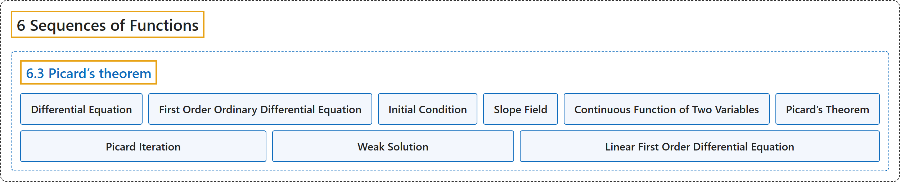

6.3 Picard’s theorem
Classification

Glossary
| Term | Definition | 中文翻译 | Source |
|---|---|---|---|
| 6.3 Picard’s theorem 皮卡定理 |
(No definition) | （无定义） | Lebl, 2026, section 6.3 |
| Differential Equation 微分方程 |
"Modern science is described in the language of differential equations. That is, equations involving not only the unknown, but also its derivatives." | 现代科学是用微分方程的语言描述的，即不仅含有未知函数、还含有其导数的方程。 | Lebl, 2026, section 6.3 |
| First Order Ordinary Differential Equation 一阶常微分方程 |
"The simplest nontrivial form of a differential equation is the first order ordinary differential equation \(y' = F(x,y)\)." | 微分方程最简单的非平凡形式是一阶常微分方程 \(y' = F(x,y)\)。 | Lebl, 2026, section 6.3 |
| Initial Condition 初始条件 |
"Generally, we also specify an initial condition \(y(x_0)=y_0\). The solution of the equation is a function \(y(x)\) such that \(y(x_0)=y_0\) and \(y'(x) = F\bigl(x,y(x)\bigr)\)." | 通常还要指定一个初始条件 \(y(x_0)=y_0\)。方程的解是满足 \(y(x_0)=y_0\) 且 \(y'(x) = F\bigl(x,y(x)\bigr)\) 的函数 \(y(x)\)。 | Lebl, 2026, section 6.3 |
| Slope Field 斜率场 |
"See Figure 6.8 for a graphical representation of this equation called a slope field." | 这个方程的图形表示称为斜率场，见图 6.8。 | Lebl, 2026, section 6.3 |
| Continuous Function of Two Variables 二元连续函数 |
"Let \(U \subset \mathbb{R}^2\) be a set, \(F \colon U \to \mathbb{R}\) a function, and \((x,y) \in U\) a point. The function \(F\) is continuous at \((x,y)\) if for every sequence \(\bigl\{ (x_n,y_n) \bigr\}_{n=1}^\infty\) of points in \(U\) such that \(\lim_{n\to\infty} x_n = x\) and \(\lim_{n\to\infty} y_n = y\), we have \(\lim_{n \to \infty} F(x_n,y_n) = F(x,y)\). We say \(F\) is continuous if it is continuous at all points in \(U\)." | 设 \(U \subset \mathbb{R}^2\) 是集合，\(F \colon U \to \mathbb{R}\) 是函数，\((x,y) \in U\) 是一点。若对 \(U\) 中每个满足 \(\lim_{n\to\infty} x_n = x\) 且 \(\lim_{n\to\infty} y_n = y\) 的点列 \(\bigl\{ (x_n,y_n) \bigr\}_{n=1}^\infty\)，都有 \(\lim_{n \to \infty} F(x_n,y_n) = F(x,y)\)，则称 \(F\) 在 \((x,y)\) 处连续。若 \(F\) 在 \(U\) 的所有点处连续，就说 \(F\) 连续。 | Lebl, 2026, Definition 6.3.1 |
| Picard’s Theorem 皮卡定理 |
"Let \(I, J \subset \mathbb{R}\) be closed bounded intervals, let \(I^\circ\) and \(J^\circ\) be their interiors, and let \((x_0,y_0) \in I^\circ \times J^\circ\). Suppose \(F \colon I \times J \to \mathbb{R}\) is continuous and Lipschitz in the second variable, that is, there exists an \(L \in \mathbb{R}\) such that \(\bigl\lvert F(x,y) - F(x,z) \bigr\rvert \leq L \lvert y-z \rvert \qquad \text{for all } y,z \in J, x \in I .\) Then there exists an \(h > 0\) such that \([x_0-h,x_0+h] \subset I\) and a unique differentiable function \(f \colon [x_0 - h, x_0 + h] \to J \subset \mathbb{R}\) such that \(f'(x) = F\bigl(x,f(x)\bigr)\) and \(f(x_0) = y_0\)." | 设 \(I, J \subset \mathbb{R}\) 是有界闭区间，\(I^\circ\) 与 \(J^\circ\) 是它们的内部，\((x_0,y_0) \in I^\circ \times J^\circ\)。设 \(F \colon I \times J \to \mathbb{R}\) 连续，且关于第二个变量满足利普希茨条件，即存在 \(L \in \mathbb{R}\) 使得 \(\bigl\lvert F(x,y) - F(x,z) \bigr\rvert \leq L \lvert y-z \rvert \qquad \text{for all } y,z \in J, x \in I .\) 则存在 \(h > 0\) 使得 \([x_0-h,x_0+h] \subset I\)，并存在唯一的可微函数 \(f \colon [x_0 - h, x_0 + h] \to J \subset \mathbb{R}\)，满足 \(f'(x) = F\bigl(x,f(x)\bigr)\) 且 \(f(x_0) = y_0\)。 | Lebl, 2026, Theorem 6.3.2 |
| Picard Iteration 皮卡迭代 |
"The idea of our proof is that we try to plug in approximations to a solution to the right-hand side of (6.2) to get better approximations on the left-hand side of (6.2). We hope that in the end the sequence converges and solves (6.2) and hence (6.1). The technique below is called Picard iteration, and the individual functions \(f_k\) are called the Picard iterates." | 证明的思路是：把解的近似代入 (6.2) 的右边，在 (6.2) 的左边得到更好的近似，希望最终这个序列收敛，并解出 (6.2)，从而解出 (6.1)。下面的技巧称为皮卡迭代，其中的各个函数 \(f_k\) 称为皮卡迭代函数。 | Lebl, 2026, Theorem 6.3.2, proof |
| Weak Solution 弱解 |
"It is possible to weaken what we mean by “solution to \(y' = F(x,y)\)” by focusing on the integral equation \(f(x) = y_0 + \int_{x_0}^x F\bigl(t,f(t)\bigr) \, dt\). Notice, however, that \(f'(0)\) does not exist, so \(f\) is only what is called a weak solution to the differential equation." | 可以通过着眼于积分方程 \(f(x) = y_0 + \int_{x_0}^x F\bigl(t,f(t)\bigr) \, dt\) 来放宽“\(y' = F(x,y)\) 的解”的含义。但请注意，\(f'(0)\) 不存在，所以 \(f\) 只是该微分方程的所谓弱解。 | Lebl, 2026, Remark 6.3.7 |
| Linear First Order Differential Equation 一阶线性微分方程 |
"A common type of equation is a linear first order differential equation, that is, an equation of the form \(y' + p(x) y = q(x) , \qquad y(x_0) = y_0 .\)" | 一类常见的方程是一阶线性微分方程，即形如 \(y' + p(x) y = q(x) , \qquad y(x_0) = y_0 .\) 的方程。 | Lebl, 2026, Exercise 6.3.6 |
References
Lebl, J. (2026). Basic analysis I & II: Introduction to real analysis (May 22, 2026 edition). Retrieved October 29, 2026, from https://www.jirka.org/ra/html/